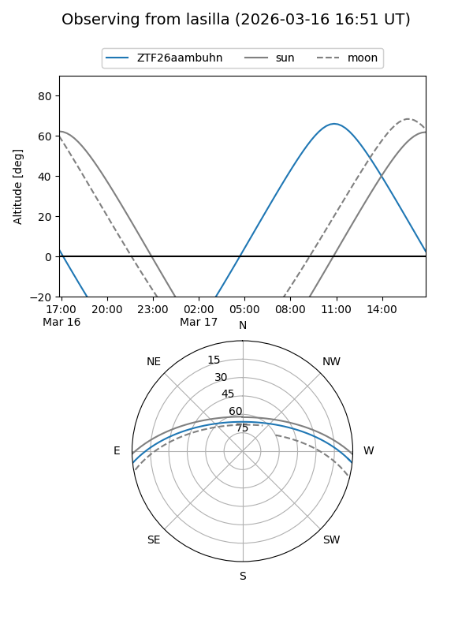
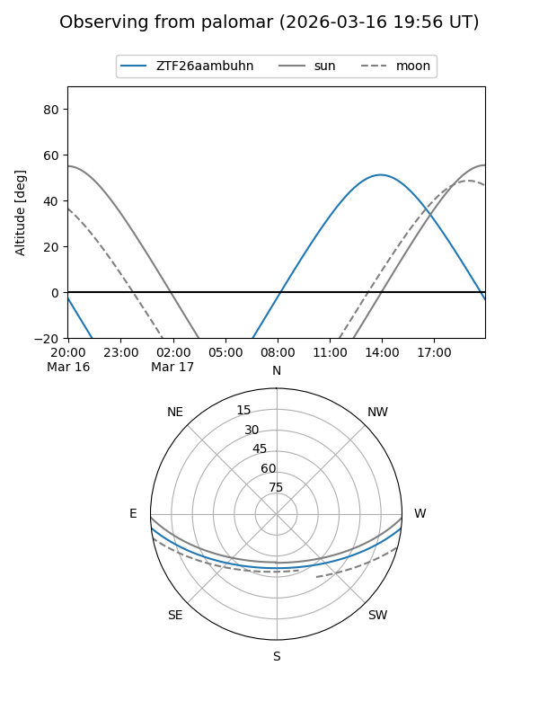

ZTF26aambuhn
Target ZTF26aambuhn at 2026-03-16 14:00
Aliases and brokers:
FINK: link
Lasair: link
ALeRCE: link
alt names
ZTF26aambuhn (ztf,fink_ztf)
Coordinates:
equatorial (ra, dec) = 266.9503,-5.32739
equatorial (HMS+DMS) = 17:47:48.07,-05:19:38.60
galactic (l, b) = (20.7287,+11.57014)
Flags:
Photometry:
last ztfg=16.78
1 ztfg detections
Lightcurve
Visibility


Additional plots